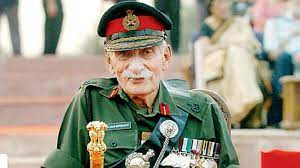

Sam Manekshaw

Indian Military Academy
Manekshaw was selected as part of the first batch of cadets.[citation needed] Called "The Pioneers", his class also produced Smith Dun and Muhammad Musa Khan, future commanders-in-chief of Burma and Pakistan, respectively.[citation needed] Although the academy was inaugurated by Chetwode on 10 December 1932, the cadets' military training commenced on 1 October 1932.[15] Manekshaw proved to be witty during his stay at IMA and went on to achieve a number of firsts: the first graduate to join one of the Gorkha regiments; first to serve as the Chief of the Army Staff of India; and first to attain the rank of field marshal.[15] Of the 40 cadets inducted, only 22 completed the course, and they were commissioned as second lieutenants on 1 February 1935 with antedated seniority from 4 February 1934.[17]
Military career
At the time of Manekshaw's commissioning, it was standard practice for newly commissioned Indian officers to be initially attached to a British regiment before being sent to an Indian unit. Thus, Manekshaw joined the 2nd Battalion, Royal Scots, stationed at Lahore. He was later posted to the 4th Battalion, 12th Frontier Force Regiment, stationed in Burma.[18][19][20] On 1 May 1938, he was appointed quartermaster of his company.[21] Already fluent in Punjabi, Hindi, Urdu, English and his parental language of Gujarati, in October 1938 Manekshaw qualified as a Higher Standard army interpreter in Pashto.[22][23]
World War II
Because of a shortage of qualified officers on the outbreak of war, in the first two years of the conflict Manekshaw was appointed to the acting or temporary ranks of captain and major before promotion to substantive captain on 4 February 1942.[24] He saw action in Burma in the 1942 campaign at the Sittang River with the 4th Battalion, 12th Frontier Force Regiment,[25] and was recognised for bravery in battle. During the fighting around Pagoda Hill, a key position on the left of the Sittang bridgehead, he led his company in a counter-attack against the invading Imperial Japanese Army; despite suffering 50% casualties the company managed to achieve its objective. After capturing the hill, Manekshaw was hit by a burst of light machine gun fire and was severely wounded in the stomach.[26] Observing the battle, Maj. Gen. David Cowan, commander of the 17th Infantry Division, spotted Manekshaw clinging to life and, having witnessed his valour in the face of stiff resistance, rushed over to him. Fearing that Manekshaw would die, the general pinned his own Military Cross ribbon on him saying, "A dead person cannot be awarded a Military Cross".[27] This award was made official with the publication of the notification in a supplement to the London Gazette on 21 April 1942 (dated 23 April 1942).
Home